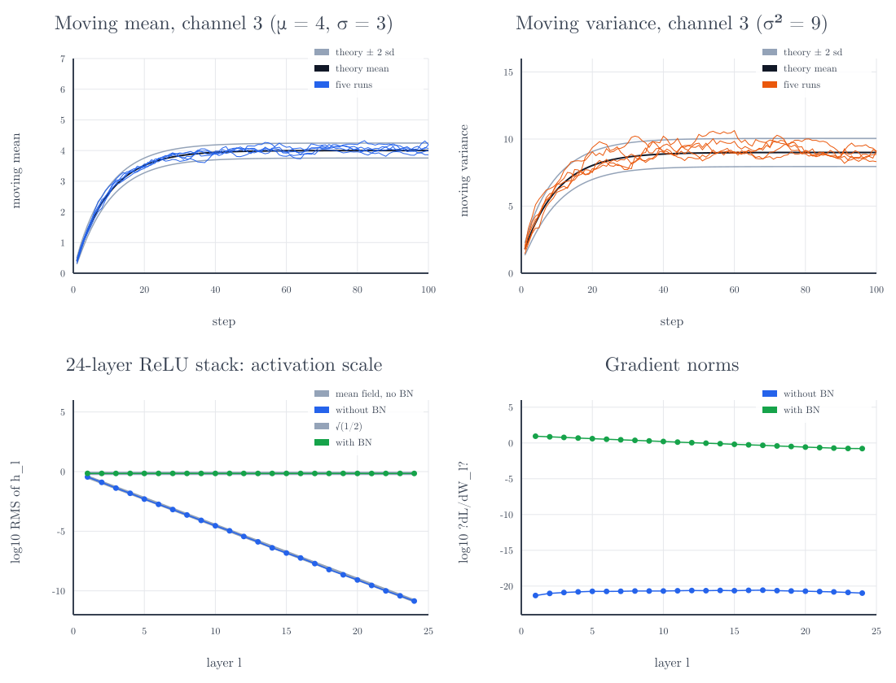
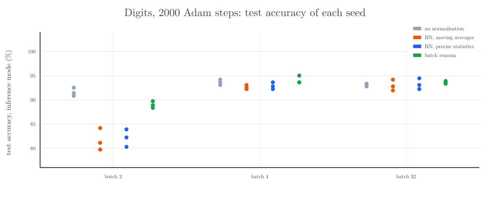

Batch Normalisation: Statistics, Gradients and Small Batches
Abstract
Batch normalisation standardises each channel with the mean and variance of the current batch while training, and with moving averages of them at inference. This report checks datamunge's layer
against hand computations to \(10^{-16}\), including the convention that the moving variance is the unbiased one. It derives the gradient through the batch statistics, which is
orthogonal to the constant vector exactly and to the normalised input up to a predicted \(\varepsilon\) term, and the scale invariance that follows: the weight gradient is orthogonal to the weights
and inversely proportional to their norm. The mean and spread of the moving averages match closed forms to within 4% over 500 replications. In a 24-layer ReLU network with
weights at half the usual scale, the activations shrink by \(\sqrt8\) per layer as mean-field theory predicts, while batch norm holds them at \(\sqrt{1/2}\). Its gradients, however, grow by 1.20 per layer towards the
input, close to the wide-network rate \(\sqrt{\pi/(\pi-1)}=1.21\). On digits, batch norm with batches of 2 loses 10 points of test accuracy. Precise population statistics do not recover them, and batch renormalisation
recovers most. The library gained nn::batch_renorm, nn::BatchStatsAccumulator and nn::fold_batch_norm.
The problem
Batch normalisation (Ioffe and Szegedy, 2015) inserts, after a linear layer, a standardisation of each channel over the batch followed by a learned scale and shift. It made deep networks much easier to train, and it is still everywhere in convolutional networks. It is also unusual among layers. Its output for one example depends on the other examples in the batch, it behaves differently in training and inference, and it carries state that is not learned by gradient descent. Each of these causes problems in practice: wrong variance conventions, moving averages that lag the weights, and small batches that train a different function from the one used at test time.
This report replaces the original example examples/nn/0_foundations/0.2_reusable_layer_library/batch_norm.cpp. That example checked the training pass, the moving statistics, a deep
ReLU stack and the backward pass. All four are kept here, with the theory behind each and an experiment on batch size.
The method
Training and inference
For a batch of \(N\) values of one channel, \(x_1,\dots,x_N\), training mode computes
with statistics taken over every axis but the last, so a convolution's channel is normalised over the batch and both spatial axes. The normalisation uses the biased variance. The moving statistics are
updated as \(\bar\mu\leftarrow m\bar\mu+(1-m)\mu_B\) and \(\bar v\leftarrow m\bar v+(1-m)\tfrac N{N-1}\sigma_B^2\), the unbiased variance, as in TensorFlow. Inference uses \(y=\gamma(x-\bar\mu)/\sqrt{\bar v+\varepsilon}+\beta\), an affine map that can be folded
into the preceding layer. With \(s=\gamma/\sqrt{\bar v+\varepsilon}\), a layer \(xW+b\) followed by inference-mode batch norm equals \(xW'+b'\) with \(W'=W\operatorname{diag}(s)\) and \(b'=(b-\bar\mu)\odot s+\beta\) (nn::fold_batch_norm).
The gradient through the batch statistics
Write \(g_i=\partial L/\partial y_i\) and \(\sigma=\sqrt{\sigma_B^2+\varepsilon}\). Then \(\partial L/\partial\hat x_i=\gamma g_i\), and \(x_i\) affects \(L\) directly, through \(\mu_B\) and through \(\sigma\). With \(\partial\mu_B/\partial x_i=1/N\) and \(\partial\sigma/\partial x_i=(x_i-\mu_B)/(N\sigma)=\hat x_i/N\), collecting terms gives
The input gradient is a projection. Its sum over the batch is zero, since \(\sum_i\hat x_i=0\): shifting a channel by a constant does not change its output. Its inner product with \(\hat x\) is \(\frac{\gamma}{N\sigma}\sum_jg_j\hat x_j\,(N-\sum_i\hat x_i^2)\), and \(\sum_i\hat x_i^2=N\sigma_B^2/(\sigma_B^2+\varepsilon)\). So it equals \(\gamma\,\tfrac{\varepsilon}{\sigma_B^2+\varepsilon}\sum_jg_j\hat x_j/\sigma\), zero only when \(\varepsilon=0\), because rescaling the channel changes the output only through \(\varepsilon\).
That second invariance has a consequence for the weights. If \(z=xW\) feeds a batch norm, then for \(\varepsilon\to0\) the output is unchanged when column \(k\) of \(W\) is multiplied by \(a>0\). Differentiating \(L(aw)=L(w)\) in \(a\) at \(a=1\) gives \(w\cdot\nabla_wL=0\): the gradient is orthogonal to each unit's weights. Differentiating in \(w\) gives \(\nabla L(aw)=\nabla L(w)/a\). So gradient steps only rotate the weights, to first order, and lengthen them at second order, and larger weights get smaller steps. This is the implicit learning-rate schedule of normalised networks (van Laarhoven, 2017; Hoffer et al., 2018).
The statistics of moving averages
If successive batches are independent draws of \(N\) rows from a population with mean \(\mu\) and variance \(\sigma^2\), the moving mean after \(t\) steps from \(\bar\mu_0=0\) is a weighted sum of independent batch means. Its weights are \((1-m)m^{t-k}\), so
The moving variance starts at 1, so \(\mathbb E\bar v_t=\sigma^2(1-m^t)+m^t\). For Gaussian data the unbiased batch variance has variance \(2\sigma^4/(N-1)\), so \(\operatorname{sd}\bar v_t=\sigma^2\sqrt{2/(N-1)}\sqrt{(1-m)(1-m^{2t})/(1+m)}\).
The factor \(\sqrt{(1-m)/(1+m)}\) is the noise reduction from averaging about \((1+m)/(1-m)\) batches. In real training the batches are not draws from a fixed population, because the weights change and the
moving averages lag them. Precise statistics (Wu and Johnson, 2021) recompute each layer's exact mean and variance over many batches with the final weights. nn::BatchStatsAccumulator merges batches
exactly with the pairwise update of Chan et al. (1983): for counts \(n_a,n_b\), means \(\mu_a,\mu_b\) and sums of squared deviations \(M_a,M_b\),
Small batches and batch renormalisation
With \(N=2\), \(\hat x_{1,2}=\pm(x_1-x_2)/\sqrt{(x_1-x_2)^2+4\varepsilon}\), which is almost \(\pm1\). In training the next layer sees nearly binary signs, while at inference it sees continuous standardised values. More generally, the training-mode output depends on noisy batch statistics, and inference replaces them by population values the network never trained with. Batch renormalisation (Ioffe, 2017) corrects the training-time normalisation towards the moving statistics:
with \(\bar\sigma=\sqrt{\bar v+\varepsilon}\), and \(r\) and \(d\) treated as constants by autograd. Unclipped, \(\hat x_i=(x_i-\bar\mu)/\bar\sigma\), exactly the inference-mode value, while the gradient still flows through the batch statistics.
nn::batch_renorm implements it with the same parameter and statistics names as nn::batch_norm. With \(r_{\max}=1\) and \(d_{\max}=0\) it is nn::batch_norm.
Simple examples
A training pass, its gradient, scale invariance and folding
The program below normalises a batch of 8 rows of 4 channels, with deliberately different means and scales, and compares everything the layer returns or stores with the formulas. It checks the gradient on a batch of 6 rows against the closed form and finite differences, and the predicted residual of the \(\hat x\)-orthogonality. It measures the weight gradient of a dense layer followed by batch norm as the weights are rescaled, and folds a batch norm into a dense layer.
#include <dm/dm.hpp>
namespace nn = dm::nn;
using nn::Tensor;
const auto F64 = nn::DType::Float64;
constexpr double kEps = 1e-3;
// x [n, c] with column j ~ N(mean[j], sd[j]^2).
Tensor gaussian(int n, const std::vector<double>& mean, const std::vector<double>& sd, nn::Generator& g) {
const int c = static_cast<int>(mean.size());
return nn::normal({n, c}, 0, 1, g, F64) * nn::from_vector(sd, {c}) + nn::from_vector(mean, {c});
}
int main() {
nn::Generator gen(1);
// 1. A training pass on x [8, 4] against the formulas.
{
nn::ParameterStore p(0, F64), stats(0, F64);
const Tensor x = gaussian(8, {1, -2, 0, 5}, {1, 3, 0.1, 2}, gen);
const Tensor infer = nn::batch_norm(p, stats, "bn", x, false, {.momentum = 0.9, .eps = kEps}); // moving stats still (0, 1)
const Tensor train = nn::batch_norm(p, stats, "bn", x, true, {.momentum = 0.9, .eps = kEps});
const auto fused = nn::batch_norm_train(x, p.at("bn/gamma"), p.at("bn/beta"), kEps);
const int N = 8;
std::print("| channel | batch mean | biased variance | unbiased variance | variance the op reports | max \\|y − hand\\| |\n| ---: | ---: | ---: | ---: | ---: | ---: |\n");
double e_biased = 0, e_unbiased = 0, e_update = 0;
for (int c = 0; c < 4; ++c) {
double mu = 0, var = 0, ey = 0;
for (int i = 0; i < N; ++i) mu += x.at({i, c}) / N;
for (int i = 0; i < N; ++i) var += (x.at({i, c}) - mu) * (x.at({i, c}) - mu) / N;
for (int i = 0; i < N; ++i) ey = std::max(ey, std::abs((x.at({i, c}) - mu) / std::sqrt(var + kEps) - fused.y.at({i, c})));
const double bv = fused.variance.at({c});
e_biased = std::max(e_biased, std::abs(var - bv)), e_unbiased = std::max(e_unbiased, std::abs(var * N / (N - 1) - bv));
e_update = std::max({e_update, std::abs(stats.at("bn/moving_mean").at({c}) - 0.1 * mu), std::abs(stats.at("bn/moving_var").at({c}) - (0.9 + 0.1 * bv))});
std::print("| {} | {:.4f} | {:.4f} | {:.4f} | {:.4f} | {:.1e} |\n", c, mu, var, var * N / (N - 1), bv, ey);
}
std::print("\n|reported − biased| up to {:.2f}, |reported − unbiased| up to {:.1e}. Inference with fresh statistics (0, 1): max |y − x/√(1 + ε)| = {:.1e}. Layer against batch_norm_train: {:.1e}. Moving-average update against 0.9·(0, 1) + 0.1·(mean, unbiased variance): {:.1e}.\n",
e_biased, e_unbiased, nn::max(nn::abs(infer - x / std::sqrt(1 + kEps))).item(), nn::max(nn::abs(train - fused.y)).item(), e_update);
}
// 2. The gradient through the batch statistics (gamma = 1): dx = (N dy - sum dy - xhat sum(dy xhat)) / (N sigma).
{
nn::ParameterStore p(0, F64), stats(0, F64);
const int N = 6, C = 3;
const Tensor x = gaussian(N, {0, 1, -1}, {1, 2, 0.5}, gen).requires_grad_(true), r = nn::normal({N, C}, 0, 1, gen, F64);
auto loss_of = [&](const Tensor& xx) { return nn::sum(nn::batch_norm(p, stats, "bn", xx, true, {.momentum = 0.9, .eps = kEps, .update_stats = false}) * r); };
const Tensor loss = loss_of(x); // creates gamma and beta
const auto g = nn::grad({loss}, {x, p.at("bn/gamma"), p.at("bn/beta")});
double e_x = 0, e_gamma = 0, e_beta = 0, col = 0, dot = 0, dot_err = 0;
for (int c = 0; c < C; ++c) {
double mu = 0, var = 0;
for (int i = 0; i < N; ++i) mu += x.at({i, c}) / N;
for (int i = 0; i < N; ++i) var += (x.at({i, c}) - mu) * (x.at({i, c}) - mu) / N;
const double sigma = std::sqrt(var + kEps);
double sdy = 0, sdyx = 0, cs = 0, cd = 0;
for (int i = 0; i < N; ++i) sdy += r.at({i, c}), sdyx += r.at({i, c}) * (x.at({i, c}) - mu) / sigma;
for (int i = 0; i < N; ++i) {
const double xh = (x.at({i, c}) - mu) / sigma;
e_x = std::max(e_x, std::abs((N * r.at({i, c}) - sdy - xh * sdyx) / (N * sigma) - g[0].at({i, c})));
cs += g[0].at({i, c}), cd += g[0].at({i, c}) * xh;
}
col = std::max(col, std::abs(cs)), dot = std::max(dot, std::abs(cd));
dot_err = std::max(dot_err, std::abs(cd - sdyx * kEps / (var + kEps) / sigma)); // predicted residual
e_gamma = std::max(e_gamma, std::abs(sdyx - g[1].at({c}))), e_beta = std::max(e_beta, std::abs(sdy - g[2].at({c})));
}
const auto check = nn::gradcheck([&](const std::vector<Tensor>& in) { return loss_of(in[0]); }, {x});
std::print("\nGradient: max |dL/dx − closed form| = {:.1e}, |dL/dγ − Σ dy·x̂| = {:.1e}, |dL/dβ − Σ dy| = {:.1e}; finite differences: max error {:.1e} ({}). Per channel, |Σ_i dL/dx_i| ≤ {:.1e} and |Σ_i dL/dx_i · x̂_i| ≤ {:.1e}, which matches ε/(σ_B² + ε) · Σ dy·x̂ / σ to {:.1e}.\n",
e_x, e_gamma, e_beta, check.max_abs_error, check.ok ? "pass" : "FAIL", col, dot, dot_err);
}
// 3. Scale invariance: BN(x W a) = BN(x W) for a > 0 (up to epsilon), so dL/dW is orthogonal to W and scales like 1/a.
{
nn::ParameterStore p(0, F64), stats(0, F64);
const Tensor x = nn::normal({64, 10}, 0, 1, gen, F64), r = nn::normal({64, 5}, 0, 1, gen, F64);
const Tensor W0 = nn::normal({10, 5}, 0, 1, gen, F64);
std::print("\n| scale a of W | ‖dL/dW‖ | ‖dL/dW‖ · a | Σ W ⊙ dL/dW (per unit, largest) |\n| ---: | ---: | ---: | ---: |\n");
for (double a : {0.5, 1.0, 2.0, 4.0}) {
const Tensor W = (W0 * a).requires_grad_(true);
const Tensor gW = nn::grad({nn::sum(nn::batch_norm(p, stats, "bn", nn::matmul(x, W), true, {.eps = 1e-12, .update_stats = false}) * r)}, {W})[0];
std::print("| {} | {:.6f} | {:.6f} | {:.1e} |\n", a, std::sqrt(nn::sum(nn::square(gW)).item()), a * std::sqrt(nn::sum(nn::square(gW)).item()),
nn::max(nn::abs(nn::sum(W * gW, {0}))).item());
}
}
// 4. Folding an inference-mode batch norm into the dense layer before it.
{
const Tensor x = nn::normal({100, 8}, 0, 1, gen, F64), W = nn::normal({8, 4}, 0, 1, gen, F64), b = nn::normal({4}, 0, 1, gen, F64);
const Tensor gamma = nn::uniform({4}, 0.5, 2.0, gen, F64), beta = nn::normal({4}, 0, 1, gen, F64);
const Tensor mu = nn::normal({4}, 0, 1, gen, F64), var = nn::uniform({4}, 0.5, 3.0, gen, F64);
const auto f = nn::fold_batch_norm(W, b, gamma, beta, mu, var, kEps);
std::print("\nFolded dense layer against dense + inference batch norm, 100 rows: max difference {:.1e}.\n",
nn::max(nn::abs(nn::matmul(x, f.weight) + f.bias - nn::batch_norm_infer(nn::matmul(x, W) + b, gamma, beta, mu, var, kEps))).item());
}
}| channel | batch mean | biased variance | unbiased variance | variance the op reports | max |y − hand| |
|---|---|---|---|---|---|
| 0 | 0.5743 | 0.8801 | 1.0058 | 1.0058 | 4.4e-16 |
| 1 | -1.4619 | 2.3234 | 2.6553 | 2.6553 | 1.1e-16 |
| 2 | 0.0423 | 0.0175 | 0.0199 | 0.0199 | 2.2e-16 |
| 3 | 5.0321 | 5.1168 | 5.8478 | 5.8478 | 2.2e-16 |
reported − biased up to 0.73, reported − unbiased up to 0.0e+00. Inference with fresh statistics (0, 1): max y − x/√(1 + ε) = 2.2e-16. Layer against batch_norm_train: 0.0e+00. Moving-average update against 0.9·(0, 1) + 0.1·(mean, unbiased variance): 1.1e-16.
Gradient: max dL/dx − closed form = 2.2e-16, dL/dγ − Σ dy·x̂ = 2.2e-16, dL/dβ − Σ dy = 0.0e+00; finite differences: max error 6.3e-10 (pass). Per channel, Σ_i dL/dx_i ≤ 2.2e-16 and Σ_i dL/dx_i · x̂_i ≤ 3.4e-03, which matches ε/(σ_B² + ε) · Σ dy·x̂ / σ to 7.4e-16.
| scale a of W | ‖dL/dW‖ | ‖dL/dW‖ · a | Σ W ⊙ dL/dW (per unit, largest) |
|---|---|---|---|
| 0.5 | 36.611509 | 18.305755 | 4.3e-12 |
| 1 | 18.305755 | 18.305755 | 1.1e-12 |
| 2 | 9.152877 | 18.305755 | 2.7e-13 |
| 4 | 4.576439 | 18.305755 | 6.9e-14 |
Folded dense layer against dense + inference batch norm, 100 rows: max difference 1.8e-15.
The output matches the formula to within \(4.4\times10^{-16}\) in every channel. The variance the fused op reports, which feeds the moving average, is the unbiased one: it agrees with \(\tfrac N{N-1}\sigma_B^2\) exactly and differs from \(\sigma_B^2\) by up to 0.73. Before any training step the moving statistics are \((0,1)\), so the inference branch returns \(x/\sqrt{1+\varepsilon}\). The update writes \(0.9\cdot(0,1)+0.1\cdot(\mu_B,\tfrac N{N-1}\sigma_B^2)\), as specified. Channel 2, whose values vary by only about 0.1, shows why \(\varepsilon\) matters: its biased variance, 0.0175, is only 17 times \(\varepsilon=10^{-3}\).
The input gradient matches the closed form to \(2.2\times10^{-16}\), and finite differences in float64 to \(6\times10^{-10}\). Its batch sums vanish to rounding. Its inner products with \(\hat x\) are as large as \(3.4\times10^{-3}\), and they equal the predicted \(\varepsilon\) residual to \(7\times10^{-16}\). For the dense layer, with \(\varepsilon=10^{-12}\), the weight gradient's norm times the scale \(a\) is 18.305755 at every scale from 0.5 to 4, and \(\sum_iW_{ik}\,\partial L/\partial W_{ik}\) is at most \(4\times10^{-12}\) for every unit: the gradient halves when the weights double and is orthogonal to them. Folding reproduces dense-then-batch-norm to \(1.8\times10^{-15}\).
Checking the theory
Moving averages, and a deep ReLU network
The next program runs 500 independent replications of the original example's moving-statistics experiment. Each has four channels, with population means \((1,2,3,4)\) and standard deviations \((1,2,0.5,3)\), batches of 32 and momentum 0.9. Channels are independent, so one layer with \(4\times500\) channels runs all replications at once. The program then repeats the original 24-layer experiment. The stack has ReLU layers of width 256, a batch of 128 and weights \(\mathcal N(0,0.25/256)\), half the LeCun standard deviation, with and without batch norm after each linear layer.
#include <dm/dm.hpp>
namespace nn = dm::nn;
using nn::Tensor;
const auto F64 = nn::DType::Float64;
constexpr double kEps = 1e-3;
int main() {
std::filesystem::create_directories("build");
nn::Generator gen(2);
// 1. Moving statistics, momentum 0.9, batches of 32. Channels are independent, so one layer with 4 x 500
// channels runs 500 replications of the four populations N(m_j, s_j^2), m = (1, 2, 3, 4), s = (1, 2, 0.5, 3).
const int R = 500, N = 32, steps = 300;
const double m = 0.9;
const std::vector<double> mu{1, 2, 3, 4}, sd{1, 2, 0.5, 3};
std::vector<double> mus, sds;
for (int r = 0; r < R; ++r) mus.insert(mus.end(), mu.begin(), mu.end()), sds.insert(sds.end(), sd.begin(), sd.end());
const Tensor M = nn::from_vector(mus, {4 * R}), S = nn::from_vector(sds, {4 * R});
nn::ParameterStore p(0, F64), stats(0, F64);
std::vector<std::vector<double>> path_mean(5), path_var(5); // channel 3 of the first five replications
std::vector<double> t_axis;
std::print("| step | mean of moving mean, ch. 3 | theory μ(1 − mᵗ) | sd across runs | theory | mean of moving var, ch. 3 | theory | sd across runs | theory |\n| ---: | ---: | ---: | ---: | ---: | ---: | ---: | ---: | ---: |\n");
for (int t = 1; t <= steps; ++t) {
nn::NoGradGuard ng;
(void)nn::batch_norm(p, stats, "bn", nn::normal({N, 4 * R}, 0, 1, gen, F64) * S + M, true, {.momentum = m, .eps = kEps});
const auto mm = stats.at("bn/moving_mean").to_vector<double>(), mv = stats.at("bn/moving_var").to_vector<double>();
t_axis.push_back(t);
for (int r = 0; r < 5; ++r) path_mean[r].push_back(mm[4 * r + 3]), path_var[r].push_back(mv[4 * r + 3]);
if (t == 1 || t == 10 || t == 30 || t == 100 || t == 300) {
auto moments = [&](const std::vector<double>& v) {
double a = 0, b = 0;
for (int r = 0; r < R; ++r) a += v[4 * r + 3] / R;
for (int r = 0; r < R; ++r) b += (v[4 * r + 3] - a) * (v[4 * r + 3] - a) / (R - 1);
return std::pair{a, std::sqrt(b)};
};
const auto [am, sm] = moments(mm);
const auto [av, sv] = moments(mv);
const double decay = (1 - m) / (1 + m) * (1 - std::pow(m, 2 * t));
const double s2 = sd[3] * sd[3];
std::print("| {} | {:.3f} | {:.3f} | {:.3f} | {:.3f} | {:.3f} | {:.3f} | {:.3f} | {:.3f} |\n", t, am, mu[3] * (1 - std::pow(m, t)), sm,
sd[3] * std::sqrt(decay / N), av, s2 * (1 - std::pow(m, t)) + std::pow(m, t), sv, s2 * std::sqrt(2.0 / (N - 1) * decay));
}
}
// All four channels at step 300 (stationary): sd of the moving mean and moving variance across runs against theory.
{
const auto mm = stats.at("bn/moving_mean").to_vector<double>(), mv = stats.at("bn/moving_var").to_vector<double>();
const double decay = (1 - m) / (1 + m);
std::print("\nStep 300, ratio of measured to predicted sd across the 500 runs, channels 0–3: moving mean");
for (int j = 0; j < 4; ++j) {
double a = 0, b = 0;
for (int r = 0; r < R; ++r) a += mm[4 * r + j] / R;
for (int r = 0; r < R; ++r) b += (mm[4 * r + j] - a) * (mm[4 * r + j] - a) / (R - 1);
std::print(" {:.3f}", std::sqrt(b) / (sd[j] * std::sqrt(decay / N)));
}
std::print("; moving variance");
for (int j = 0; j < 4; ++j) {
double a = 0, b = 0;
for (int r = 0; r < R; ++r) a += mv[4 * r + j] / R;
for (int r = 0; r < R; ++r) b += (mv[4 * r + j] - a) * (mv[4 * r + j] - a) / (R - 1);
std::print(" {:.3f}", std::sqrt(b) / (sd[j] * sd[j] * std::sqrt(2.0 / (N - 1) * decay)));
}
std::print(".\n");
// Inference on 4096 fresh rows of replication 0: the output is standardised by the moving statistics.
const Tensor fresh = nn::normal({4096, 4 * R}, 0, 1, gen, F64) * S + M;
const Tensor y = nn::slice(nn::batch_norm(p, stats, "bn", fresh, false, {.eps = kEps}), {0, 0}, {4096, 4});
const Tensor ym = nn::mean(y, {0}), ysd = nn::sqrt(nn::mean(nn::square(y - ym), {0}));
std::print("Inference on 4096 fresh rows, replication 0: output means {:.3f} {:.3f} {:.3f} {:.3f}, sds {:.3f} {:.3f} {:.3f} {:.3f}.\n", ym.at({0}), ym.at({1}), ym.at({2}),
ym.at({3}), ysd.at({0}), ysd.at({1}), ysd.at({2}), ysd.at({3}));
}
// 2. A 24-layer ReLU stack, width 256, weights N(0, 0.25 / 256), batch 128, with and without batch norm.
const int depth = 24, width = 256, batch = 128;
std::vector<double> layers, rms_plain, rms_bn, g_plain, g_bn, pred_plain;
for (int l = 1; l <= depth; ++l) layers.push_back(l);
for (bool use_bn : {false, true}) {
nn::ParameterStore ps(3, F64), st(0, F64);
const Tensor x = nn::normal({batch, width}, 0, 1, gen, F64);
Tensor h = x;
std::vector<Tensor> W;
std::vector<double> rms;
for (int l = 0; l < depth; ++l) {
W.push_back(ps.get(std::format("W{}", l), {width, width}, nn::init::normal(0.5 / std::sqrt(width))));
Tensor z = nn::matmul(h, W.back());
if (use_bn) z = nn::batch_norm(ps, st, std::format("bn{}", l), z, true, {.eps = kEps});
h = nn::relu(z);
rms.push_back(std::sqrt(nn::mean(nn::square(h)).item()));
}
const auto g = nn::grad({nn::mean(nn::square(h))}, W);
for (int l = 0; l < depth; ++l) {
(use_bn ? rms_bn : rms_plain).push_back(std::log10(rms[l]));
(use_bn ? g_bn : g_plain).push_back(std::log10(std::sqrt(nn::sum(nn::square(g[l])).item())));
}
std::print("{}: RMS of h at layers 1, 8, 16, 24: {:.3e} {:.3e} {:.3e} {:.3e}; ‖dL/dW‖ at layers 1 and 24: {:.3e} and {:.3e}.\n", use_bn ? "With BN" : "Without BN",
rms[0], rms[7], rms[15], rms[23], std::sqrt(nn::sum(nn::square(g[0])).item()), std::sqrt(nn::sum(nn::square(g[23])).item()));
}
// Mean field without BN: q_1 = 0.25 E x^2, E h^2 = q / 2, q_{l+1} = 0.25 E h^2, so the RMS of h falls by sqrt(8) a layer.
for (int l = 1; l <= depth; ++l) pred_plain.push_back(std::log10(std::sqrt(0.125) * std::pow(8.0, -(l - 1) / 2.0)));
std::print("Mean field: without BN, RMS h_l = sqrt(1/8) · 8^(−(l−1)/2), {:.3e} at layer 24; with BN, sqrt(E relu(Z)²) = sqrt(1/2) = {:.4f}.\n",
std::pow(10.0, pred_plain.back()), std::sqrt(0.5));
// Growth of the BN gradient towards the input: least-squares slope of log10 ||dL/dW_l|| over layers 2..23.
{
double sx = 0, sy = 0, sxx = 0, sxy = 0, k = 0;
for (int l = 1; l < depth - 1; ++l) sx += l, sy += g_bn[l], sxx += double(l) * l, sxy += l * g_bn[l], k += 1;
const double slope = (k * sxy - sx * sy) / (k * sxx - sx * sx);
std::print("With BN, the gradient norm grows by a factor {:.3f} per layer towards the input (fit over layers 2–23); sqrt(pi / (pi − 1)) = {:.3f}.\n",
std::pow(10.0, -slope), std::sqrt(std::numbers::pi / (std::numbers::pi - 1)));
}
// Figure (first 100 steps; the renderer does not clip, so trim the paths to the axis).
t_axis.resize(100);
for (auto& v : path_mean) v.resize(100);
for (auto& v : path_var) v.resize(100);
const dm::graphics::RGB blue{37, 99, 235}, orange{234, 88, 12}, grey{148, 163, 184}, green{22, 163, 74};
auto band = [&](double target, double start, double sdev_stat, bool var) {
std::vector<double> lo, hi, mid;
for (double t : t_axis) {
const double decay = (1 - m) / (1 + m) * (1 - std::pow(m, 2 * t));
const double e = target * (1 - std::pow(m, t)) + start * std::pow(m, t);
const double s = var ? sdev_stat * std::sqrt(2.0 / (N - 1) * decay) : sdev_stat * std::sqrt(decay / N);
mid.push_back(e), lo.push_back(e - 2 * s), hi.push_back(e + 2 * s);
}
return std::tuple{mid, lo, hi};
};
auto p1 = dm::graphics::RPlot::create(), p2 = dm::graphics::RPlot::create();
{
const auto [mid, lo, hi] = band(4.0, 0.0, 3.0, false);
p1.lines(t_axis, hi, "theory ± 2 sd", grey, 1.5).lines(t_axis, lo, grey, 1.5).lines(t_axis, mid, "theory mean", dm::graphics::RGB{17, 24, 39}, 2.0);
for (int r = 0; r < 5; ++r) p1.lines(t_axis, path_mean[r], r == 0 ? "five runs" : "", blue, 1.0);
p1.x_limits(0, 100).y_limits(0, 7).title("Moving mean, channel 3 (μ = 4, σ = 3)").x_label("step").y_label("moving mean");
}
{
const auto [mid, lo, hi] = band(9.0, 1.0, 9.0, true);
p2.lines(t_axis, hi, "theory ± 2 sd", grey, 1.5).lines(t_axis, lo, grey, 1.5).lines(t_axis, mid, "theory mean", dm::graphics::RGB{17, 24, 39}, 2.0);
for (int r = 0; r < 5; ++r) p2.lines(t_axis, path_var[r], r == 0 ? "five runs" : "", orange, 1.0);
p2.x_limits(0, 100).y_limits(0, 16).title("Moving variance, channel 3 (σ² = 9)").x_label("step").y_label("moving variance");
}
auto p3 = dm::graphics::RPlot::create();
p3.lines(layers, pred_plain, "mean field, no BN", grey, 4.0).points(layers, rms_plain, blue, 3.5).lines(layers, rms_plain, "without BN", blue, 1.5)
.lines({1.0, 24.0}, {std::log10(std::sqrt(0.5)), std::log10(std::sqrt(0.5))}, "√(1/2)", grey, 4.0).points(layers, rms_bn, green, 3.5).lines(layers, rms_bn, "with BN", green, 1.5)
.x_limits(0, 25).y_limits(-12, 6).title("24-layer ReLU stack: activation scale").x_label("layer l").y_label("log10 RMS of h_l");
auto p4 = dm::graphics::RPlot::create();
p4.points(layers, g_plain, blue, 3.5).lines(layers, g_plain, "without BN", blue, 1.5).points(layers, g_bn, green, 3.5).lines(layers, g_bn, "with BN", green, 1.5)
.x_limits(0, 25).y_limits(-24, 6).title("Gradient norms").x_label("layer l").y_label("log10 ‖dL/dW_l‖");
auto fig = dm::graphics::RLayout::create(2, 2);
fig.add(p1).add(p2).add(p3).add(p4);
fig.size(1100, 840).fit_panels();
fig.save("build/batch_norm_theory.svg");
}| step | mean of moving mean, ch. 3 | theory μ(1 − mᵗ) | sd across runs | theory | mean of moving var, ch. 3 | theory | sd across runs | theory |
|---|---|---|---|---|---|---|---|---|
| 1 | 0.401 | 0.400 | 0.056 | 0.053 | 1.798 | 1.800 | 0.229 | 0.229 |
| 10 | 2.611 | 2.605 | 0.110 | 0.114 | 6.228 | 6.211 | 0.495 | 0.492 |
| 30 | 3.838 | 3.830 | 0.118 | 0.122 | 8.679 | 8.661 | 0.541 | 0.524 |
| 100 | 3.995 | 4.000 | 0.117 | 0.122 | 9.011 | 9.000 | 0.539 | 0.524 |
| 300 | 4.003 | 4.000 | 0.121 | 0.122 | 8.958 | 9.000 | 0.538 | 0.524 |
Step 300, ratio of measured to predicted sd across the 500 runs, channels 0–3: moving mean 1.036 1.018 0.972 0.992; moving variance 0.978 1.025 0.998 1.026. Inference on 4096 fresh rows, replication 0: output means 0.004 0.072 0.067 -0.012, sds 0.988 1.021 1.016 1.012. Without BN: RMS of h at layers 1, 8, 16, 24: 3.565e-01 2.295e-04 5.722e-08 1.401e-11; ‖dL/dW‖ at layers 1 and 24: 4.819e-22 and 1.042e-21. With BN: RMS of h at layers 1, 8, 16, 24: 7.066e-01 7.042e-01 7.022e-01 6.999e-01; ‖dL/dW‖ at layers 1 and 24: 8.785e+00 and 1.647e-01. Mean field: without BN, RMS h_l = sqrt(1/8) · 8^(−(l−1)/2), 1.455e-11 at layer 24; with BN, sqrt(E relu(Z)²) = sqrt(1/2) = 0.7071. With BN, the gradient norm grows by a factor 1.197 per layer towards the input (fit over layers 2–23); sqrt(pi / (pi − 1)) = 1.211.

Moving statistics. The averages over the 500 runs follow \(\mu(1-m^t)\) and \(\sigma^2(1-m^t)+m^t\) to within 0.01 and 0.05 at every checkpoint. The spread across runs has the predicted size from the first step to the stationary regime: at step 300 the ratio of measured to predicted standard deviation is between 0.97 and 1.04 for both statistics in all four channels. The stationary standard deviation of the moving mean is \(\sigma\sqrt{(0.1/1.9)/32}=0.041\sigma\). With momentum 0.9 and batches of 32, the moving mean of channel 3 is therefore uncertain by about 0.12, and its moving variance by about 6%. These errors carry over to inference: standardised by one run's moving statistics, 4096 fresh rows have means between \(-0.012\) and 0.072 and standard deviations between 0.988 and 1.021, rather than exactly 0 and 1.
The deep network. Without batch norm, each layer multiplies the variance of the pre-activations by \(256\times0.25/256=0.25\), and ReLU halves it. The activation RMS therefore falls by \(\sqrt8\) per layer, to a predicted \(1.46\times10^{-11}\) at layer 24 (measured \(1.40\times10^{-11}\)). The gradients are about \(10^{-21}\) at every layer, so nothing would train. With batch norm every pre-activation is standardised, and the activation RMS is \(\sqrt{\mathbb E\,\mathrm{relu}(Z)^2}=\sqrt{1/2}=0.707\) at layer 1. It declines slightly, to 0.700 at layer 24. That is the original example's "about 0.70 at every depth".
Batch norm does not make the gradients uniform, though. They grow towards the input, from 0.16 at layer 24 to 8.8 at layer 1, a factor of 1.20 per layer by a least-squares fit. Yang et al. (2019) showed that this gradient explosion is unavoidable in deep batch-normalised networks at initialisation, whatever the weight scale. For ReLU in the wide limit its rate is \(\sqrt{\pi/(\pi-1)}=1.211\) per layer in norm. Width 256 and a batch of 128 come within 1.2% of it. Batch norm fixes the forward signal, not the backward one.
A dataset: batch size on digits
The digits data (Alpaydin and Kaynak, 1998) give 1797 handwritten digits as \(8\times8\) images with grey levels 0 to 16, scaled to \([0,1]\) and centred. The model is a \(64\to128\to128\to10\) perceptron with ReLU. It has either biases and no normalisation, or batch norm (momentum 0.99), or batch renormalisation (\(r_{\max}=3\), \(d_{\max}=5\)) after each hidden linear layer. Each network trains for 2000 Adam steps with learning rate 0.002 on the first 1437 digits, with batches of 2, 4 or 32, for three seeds. It is tested in inference mode on the last 360. For the batch-norm networks, the program also replaces the moving averages with precise statistics, computed layer by layer over the whole training set in chunks of 128, and tests again.
#include <dm/dm.hpp>
namespace nn = dm::nn;
namespace init = dm::nn::init;
using nn::Tensor;
const auto F64 = nn::DType::Float64;
int main() {
std::filesystem::create_directories("build");
const auto digits = dm::datasets::digits();
const std::int64_t n = 1797, d = 64, n_train = 1437;
std::vector<double> v(static_cast<std::size_t>(n * d));
for (std::int64_t j = 0; j < d; ++j) {
const auto c = digits.get_column<double>(std::format("pixel_{}", j)).values();
const double m = std::accumulate(c.begin(), c.end(), 0.0) / n / 16.0;
for (std::int64_t i = 0; i < n; ++i) v[i * d + j] = c[i] / 16.0 - m;
}
const Tensor X = nn::from_vector(v, {n, d});
const Tensor y = nn::cast(nn::from_vector(digits.get_column<double>("digit").values(), {n}), nn::DType::Int64);
const Tensor Xtr = nn::slice(X, {0, 0}, {n_train, d}), Xte = nn::slice(X, {n_train, 0}, {n - n_train, d});
const Tensor ytr = nn::slice(y, {0}, {n_train}), yte = nn::slice(y, {n_train}, {n - n_train});
// 64 -> 128 -> 128 -> 10 with a normalisation after each hidden linear layer, ReLU, and 2000 Adam steps
// (learning rate 0.002) on minibatches drawn without replacement, for batch sizes 2, 4 and 32 and three seeds.
enum Norm { Plain, BN, Renorm };
const std::vector<int> batch_sizes{2, 4, 32};
const int steps = 2000;
struct Cell { std::vector<double> plain, ema, precise, renorm; };
std::vector<Cell> cells(batch_sizes.size());
for (std::size_t bi = 0; bi < batch_sizes.size(); ++bi) {
const int B = batch_sizes[bi];
for (std::uint64_t seed : {1, 2, 3}) {
for (Norm norm : {Plain, BN, Renorm}) {
nn::ParameterStore p(seed, F64), stats(0, F64);
const Tensor W1 = p.get("W1", {d, 128}, init::he_normal()), W2 = p.get("W2", {128, 128}, init::he_normal());
const Tensor W3 = p.get("W3", {128, 10}, init::glorot_uniform()), b3 = p.get("b3", {10}, init::zeros());
Tensor b1, b2;
if (norm == Plain) b1 = p.get("b1", {128}, init::zeros()), b2 = p.get("b2", {128}, init::zeros());
auto layer_norm = [&](const Tensor& z, const std::string& name, bool training, nn::ParameterStore& st) {
if (norm == Renorm) return nn::batch_renorm(p, st, name, z, training, {.r_max = 3.0, .d_max = 5.0});
return nn::batch_norm(p, st, name, z, training); // momentum 0.99
};
auto forward = [&](const Tensor& x, bool training, nn::ParameterStore& st) {
Tensor z1 = nn::matmul(x, W1), z2;
const Tensor h1 = nn::relu(norm == Plain ? z1 + b1 : layer_norm(z1, "bn1", training, st));
z2 = nn::matmul(h1, W2);
const Tensor h2 = nn::relu(norm == Plain ? z2 + b2 : layer_norm(z2, "bn2", training, st));
return nn::matmul(h2, W3) + b3;
};
(void)forward(nn::slice(Xtr, {0, 0}, {2, d}), false, stats); // create every parameter before the optimizer
nn::Optimizer opt(p, 0.002, {.kind = nn::OptimizerKind::Adam});
std::mt19937_64 rng(seed);
std::vector<std::int64_t> order(n_train);
std::iota(order.begin(), order.end(), 0);
std::size_t pos = n_train;
for (int s = 0; s < steps; ++s) {
if (pos + B > order.size()) std::shuffle(order.begin(), order.end(), rng), pos = 0;
const Tensor idx = nn::from_vector(std::vector<std::int64_t>(order.begin() + pos, order.begin() + pos + B), {B});
pos += B;
const Tensor loss = nn::sparse_softmax_cross_entropy(forward(nn::gather(Xtr, idx, 0), true, stats), nn::gather(ytr, idx, 0));
opt.step(nn::grad({loss}, p.parameters()));
}
nn::NoGradGuard ng;
auto accuracy = [&](nn::ParameterStore& st) {
return nn::mean(nn::cast(nn::equal(nn::argmax(forward(Xte, false, st), -1), yte), F64)).item();
};
Cell& c = cells[bi];
if (norm == Plain) { c.plain.push_back(accuracy(stats)); continue; }
(norm == BN ? c.ema : c.renorm).push_back(accuracy(stats));
if (norm == BN) {
// Precise statistics: each layer's exact training-set mean and variance, layer by layer, in chunks of 128.
nn::ParameterStore precise = stats.clone();
nn::BatchStatsAccumulator a1, a2;
for (std::int64_t at = 0; at < n_train; at += 128) a1.add(nn::matmul(nn::slice(Xtr, {at, 0}, {std::min<std::int64_t>(128, n_train - at), d}), W1));
a1.write(precise, "bn1");
const Tensor h1 = nn::relu(nn::batch_norm(p, precise, "bn1", nn::matmul(Xtr, W1), false));
a2.add(nn::matmul(h1, W2));
a2.write(precise, "bn2");
c.precise.push_back(accuracy(precise));
if (seed == 1) {
// What the layer sees in training: standardised values of layer 1 within random batches of size B.
std::mt19937_64 pick(99);
double big = 0, total = 0;
for (int t = 0; t < 200; ++t) {
std::vector<std::int64_t> ids(B);
for (auto& id : ids) id = static_cast<std::int64_t>(pick() % n_train);
const Tensor z = nn::matmul(nn::gather(Xtr, nn::from_vector(ids, {B}), 0), W1);
const Tensor xh = nn::batch_norm_train(z, nn::ones({128}, F64), nn::zeros({128}, F64), 1e-3).y;
big += nn::sum(nn::cast(nn::greater(nn::abs(xh), 0.9), F64)).item(), total += static_cast<double>(xh.numel());
}
const Tensor xi = nn::batch_norm_infer(nn::matmul(Xtr, W1), nn::ones({128}, F64), nn::zeros({128}, F64), stats.at("bn1/moving_mean"), stats.at("bn1/moving_var"), 1e-3);
std::print("Batch size {}: share of standardised layer-1 values with |x̂| > 0.9, training batches {:.3f}, inference on the training set {:.3f}.\n", B, big / total,
nn::mean(nn::cast(nn::greater(nn::abs(xi), 0.9), F64)).item());
const Tensor dm1 = nn::abs(stats.at("bn1/moving_mean") - precise.at("bn1/moving_mean")) / nn::sqrt(precise.at("bn1/moving_var"));
const Tensor rv1 = stats.at("bn1/moving_var") / precise.at("bn1/moving_var");
std::print("Batch size {}, seed 1, layer 1: moving mean off the exact mean by {:.3f} exact sds on average (max {:.3f}); moving / exact variance from {:.3f} to {:.3f}.\n", B,
nn::mean(dm1).item(), nn::max(dm1).item(), nn::min(rv1).item(), nn::max(rv1).item());
}
}
}
}
}
auto fmt = [](const std::vector<double>& a) {
return std::format("{:.1f}% ({:.1f}–{:.1f})", 100 * (a[0] + a[1] + a[2]) / 3, 100 * std::ranges::min(a), 100 * std::ranges::max(a));
};
std::print("\n| batch size | no normalisation | batch norm, moving averages | batch norm, precise statistics | batch renorm |\n| ---: | ---: | ---: | ---: | ---: |\n");
for (std::size_t bi = 0; bi < batch_sizes.size(); ++bi)
std::print("| {} | {} | {} | {} | {} |\n", batch_sizes[bi], fmt(cells[bi].plain), fmt(cells[bi].ema), fmt(cells[bi].precise), fmt(cells[bi].renorm));
auto plot = dm::graphics::RPlot::create();
const std::vector<std::pair<std::string, dm::graphics::RGB>> legend = {
{"no normalisation", {148, 163, 184}}, {"BN, moving averages", {234, 88, 12}}, {"BN, precise statistics", {37, 99, 235}}, {"batch renorm", {22, 163, 74}}};
for (std::size_t k = 0; k < legend.size(); ++k) {
std::vector<double> xs, ys;
for (std::size_t bi = 0; bi < batch_sizes.size(); ++bi) {
const auto& a = k == 0 ? cells[bi].plain : k == 1 ? cells[bi].ema : k == 2 ? cells[bi].precise : cells[bi].renorm;
for (double acc : a) xs.push_back(bi + 0.18 * (k - 1.5)), ys.push_back(100 * acc);
}
plot.points(xs, ys, legend[k].first, legend[k].second, 4.5);
}
plot.x_tick_labels({"batch 2", "batch 4", "batch 32"}).x_limits(-0.5, 2.5).y_limits(76, 104)
.title("Digits, 2000 Adam steps: test accuracy of each seed").x_label("").y_label("test accuracy, inference mode (%)");
plot.size(1100, 460).save("build/batch_norm_digits.svg");
}Batch size 2: share of standardised layer-1 values with x̂ > 0.9, training batches 0.836, inference on the training set 0.392. Batch size 2, seed 1, layer 1: moving mean off the exact mean by 0.031 exact sds on average (max 0.082); moving / exact variance from 0.797 to 1.174. Batch size 4: share of standardised layer-1 values with x̂ > 0.9, training batches 0.476, inference on the training set 0.395. Batch size 4, seed 1, layer 1: moving mean off the exact mean by 0.018 exact sds on average (max 0.063); moving / exact variance from 0.793 to 1.227. Batch size 32: share of standardised layer-1 values with x̂ > 0.9, training batches 0.390, inference on the training set 0.386. Batch size 32, seed 1, layer 1: moving mean off the exact mean by 0.005 exact sds on average (max 0.016); moving / exact variance from 0.894 to 1.075.
| batch size | no normalisation | batch norm, moving averages | batch norm, precise statistics | batch renorm |
|---|---|---|---|---|
| 2 | 91.6% (90.8–92.5) | 81.7% (79.7–84.2) | 82.1% (80.3–83.9) | 89.0% (88.3–89.7) |
| 4 | 93.6% (93.1–94.2) | 92.6% (92.2–93.1) | 92.9% (92.2–93.6) | 94.1% (93.6–95.0) |
| 32 | 93.1% (92.8–93.3) | 93.0% (91.9–94.2) | 93.2% (92.2–94.4) | 93.6% (93.3–93.9) |

With batches of 32 or 4 the four variants are within 1.5 points of each other, and the seed ranges overlap. With batches of 2, batch norm drops to 81.7%, ten points below the unnormalised network's 91.6%. The moving averages are not to blame. Replacing them with exact training-set statistics changes the result by only 0.4 points, to 82.1%, although the moving averages differ from the exact values by up to 0.08 standard deviations in the mean and by a factor of 0.80 to 1.17 in the variance. The cause is the mismatch described above. At batch 2, 84% of the layer-1 values the network sees in training have \(\lvert\hat x\rvert>0.9\), against 39% of the same layer's values at inference. At batch 32 the two shares are 39% and 39%. Batch renormalisation trains with the inference-mode values whenever its clips allow, and it recovers most of the loss, reaching 89.0% at batch 2. It also has the highest mean at batch 4 and 32, by margins within the seed ranges.
Conclusion
datamunge's batch norm matches its definition to rounding error, including TensorFlow's conventions: normalisation by the biased batch variance and moving averages of the unbiased one. The gradient through the batch statistics is a projection that removes shifts exactly and rescalings up to an \(\varepsilon\) term the derivation predicts. The resulting scale invariance makes weight gradients orthogonal to the weights and inversely proportional to their norm. Moving averages behave as the theory of exponential smoothing says, with a spread of \(\sqrt{(1-m)/(1+m)}\) times the batch noise, which carries over into inference.
In a deep ReLU network with weights at half the usual scale, batch norm held the activation scale at \(\sqrt{1/2}\) where the plain network lost a factor of \(10^{11}\). It did so at the price of gradients growing 20% per layer towards the input, close to the theoretical rate. On digits, batch norm worked as well as no normalisation with batches of 4 or more. With batches of 2 it lost ten points, because training saw nearly binary standardised values. Exact population statistics did not help, and batch renormalisation, which trains with the inference-mode normalisation, recovered most of the loss.
References
- S. Ioffe and C. Szegedy (2015). "Batch normalization: accelerating deep network training by reducing internal covariate shift". ICML, 448–456.
- S. Ioffe (2017). "Batch renormalization: towards reducing minibatch dependence in batch-normalized models". Advances in Neural Information Processing Systems 30.
- Y. Wu and J. Johnson (2021). "Rethinking 'batch' in BatchNorm". arXiv:2105.07576
- T. F. Chan, G. H. Golub and R. J. LeVeque (1983). "Algorithms for computing the sample variance: analysis and recommendations". The American Statistician 37(3), 242–247.
- T. van Laarhoven (2017). "L2 regularization versus batch and weight normalization". arXiv:1706.05350
- E. Hoffer, R. Banner, I. Golan and D. Soudry (2018). "Norm matters: efficient and accurate normalization schemes in deep networks". Advances in Neural Information Processing Systems 31.
- G. Yang, J. Pennington, V. Rao, J. Sohl-Dickstein and S. S. Schoenholz (2019). "A mean field theory of batch normalization". ICLR. arXiv:1902.08129
- E. Alpaydin and C. Kaynak (1998). "Optical recognition of handwritten digits". UCI Machine Learning Repository. doi:10.24432/C50P49